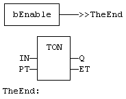
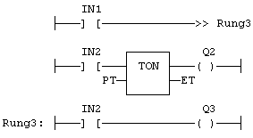

Statement
Jump to a label.
A jump to a label branches the execution of the program after the specified label. Labels and jumps cannot be used in structured ST language. In FBD language, a jump is represented by the >> symbol followed by the label name. The input of the >> symbol must be connected to a valid Boolean signal. The jump is performed only if the input is TRUE. In LD language, the >> symbol, followed by the target label name, is used as a coil at the end of a rung. The jump is performed only if the rung state is TRUE. In IL language, JMP, JMPC, JMPCN and JMPNC instructions are used to specify a jump. The destination label is the operand of the jump instruction.
Backward jumps may lead to infinite loops that block the target cycle.
Not available.
In this example the TON block will not be called if bEnable is TRUE:

In this example the second rung will be skipped if IN1 is TRUE:
